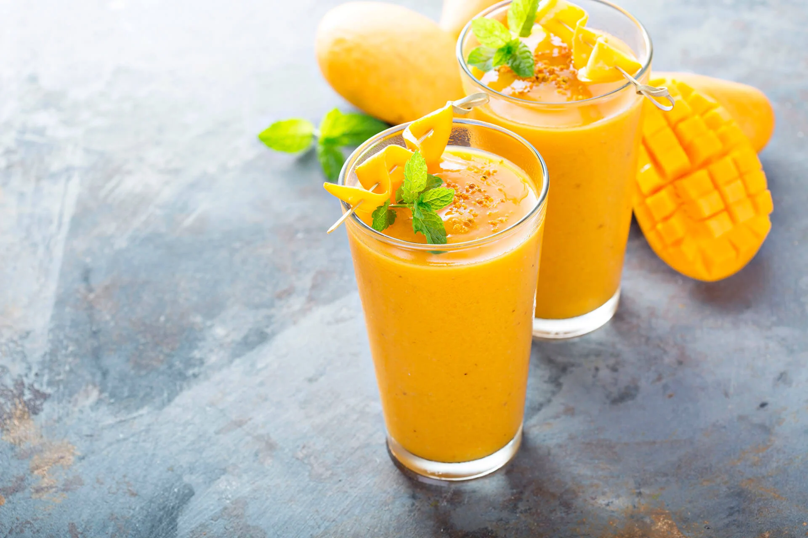

Mango Lassi

Description
Ingredients
- 1 cup chopped very ripe mango, frozen chopped mango, or canned mango pulp
- 1 cup plain yogurt
- 1/2 cup milk
- 4 teaspoons honey or sugar, more or less to taste
- Dash ground cardamom, optional
- Ice, optional
Steps
- Put the mango, yogurt, milk, honey (or sugar), and cardamom into a blender and blend for 2 minutes.
- Pour contents into a glass and sprinkle with a tiny pinch of ground cardamom to serve.